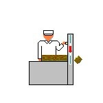
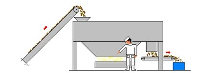
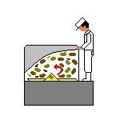
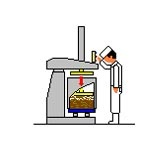
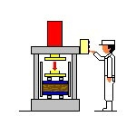
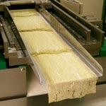

Vinegar Soaking
The raw kombu arrives in a dried state, similar to dashi kombu. Acetic acid (vinegar) is applied to add moisture and acidity to the kelp.
Cutting
Raw kombu sheets are typically around 1 metre long. They are cut down to a manageable length suitable for the subsequent steps.

Sand Removal
After harvesting, kombu is sun-dried on the beach, where sand and pebbles can become embedded. This step removes those impurities along with surface salt. The friction generated during sand removal also softens and tenderises the raw kelp.

Seasoning & Mixing
Various ingredients and seasonings are blended together at this stage.

Primary Press
The shaving machine requires 60 kg of raw material to be pressed into a block. However, because the uncompressed volume is large and highly elastic, it cannot be pressed all at once. Instead, the material is added 5 kg at a time and progressively compressed into a preliminary block ready for the secondary press.

Secondary Press
The 60 kg primary-pressed block is further compressed.

Trimming
Any excess material protruding from the mould is trimmed away to produce a neatly shaped, uniform block.

Shaving Machine (Final Step)
The final step. Tororo kombu is typically shaved to approximately 0.02 mm in thickness.
